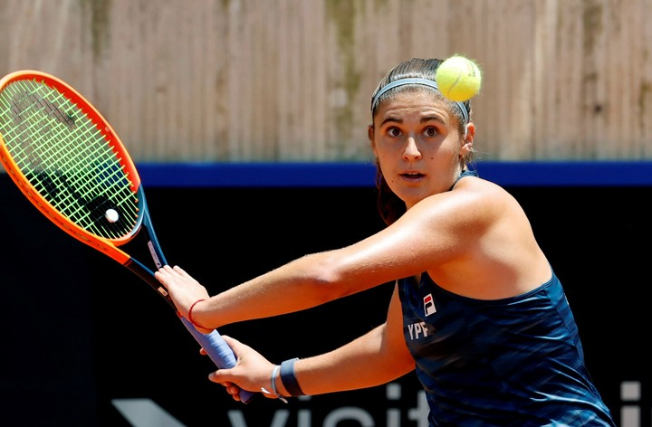
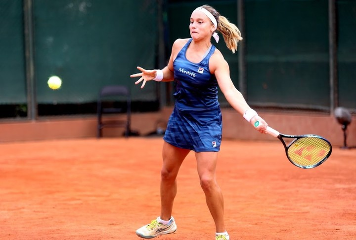
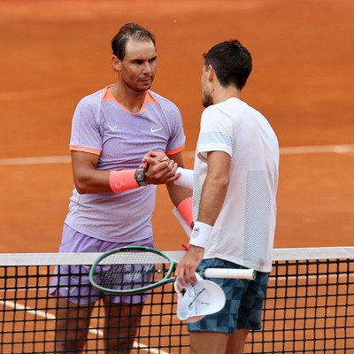
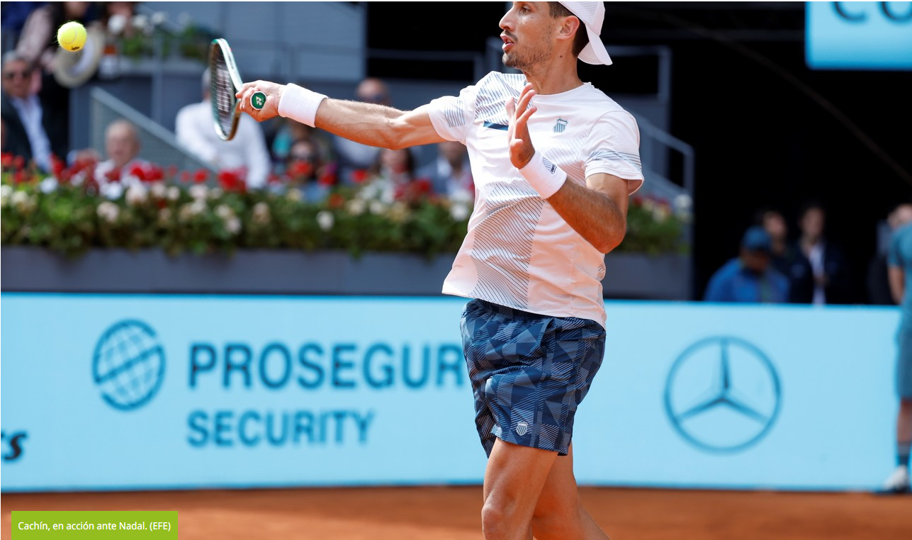

Olé
- Ingresar
- Subscribirme
Noticias del dia:
¡ESTUDIANTES CAMPEÓN DE LA COPA DE LA LIGA! EL SHOW DE MESSI EN LA GOLEADA DEL INTEILas Guerreras, como se hicieron llamar las jugadoras del equipo argentino de la Billie Jean King Cup. (Prensa BJKC)
29/04/2024 17:04hs
El martes 30 de abril no será un día más para la actual edición de la Billie Jean King Cup. De hecho, no solo tiene que ver con el presente, sino también con el futuro. Es que se realizará el sorteo para conocer los cruces de los playoffs que se celebrarán entre el 15 y el 17 de noviembre. Y Argentina, que salió segunda en la Zona Americana y se ganó el boleto a soñar con el ascenso, esperará un guiño del destino para poder ser local o tratar de encarar el cruce más "accesible" posible.
Argentina, como viene desde abajo, tendrá que cruzarse con un equipo preclasificado. Y entre las opciones aparecen: Suiza (1), Kazajistán (2), Francia (3), Eslovenia (4), Bélgica (5), Ucrania (6), Brasil (7) o México (8). Eso sí, la importancia de localía es importante, porque en esa fecha se da inicio a la gira de challengers de polvo de ladrillo por Sudamérica. Y, en ese sentido, jugar de visitante podría perjudicar la planificación de algunas tenistas nacionales.
Frente a Suiza, Bélgica o Ucrania, las dirigidas por Mercedes Paz contarán con el público a favor. En los últimos playoffs que disputaron en casa, en 2021 y 2022, jugaron en Córdoba contra Kazajistán y en Tucumán ante Brasil, mientras que en 2023 debieron viajar a la fría Eslovaquia. Justamente, una salida del país las llevaría a tener que subirse al avión por varios kilómetros. Salvo la chance de medirse con Brasil en terreno limítrofe, Argentina visitaría a Francia, Kazajistán o Eslovenia. Por su parte, el azar determinaría dónde tendría que chocar con México.
Julia Riera, jugadora copera.(EFE)
La Selección cuenta con un plantel en un punto de experiencia y madurez justa para dar el golpe. Con Nadia Podoroska (66ª) regresando a su mejor versión (se coronó en México hace algunas semanas) más el respaldo de Lourdes Carlé (83ª) -reciente campeona en Barcelona- y de Julia Riera (94ª), Paz cuenta con un tridente de singlistas para dar batalla en cualquier escenario.
Martina Capurro ya suma fuerza en la Billie Jean King Cup
Asimismo, Martina Capurro (162ª), Julieta Estable (387ª) y Luisina Giovannini (624ª) habían completado el plantel en Colombia, mientras que Solana Sierra (175ª), quien decidió no participar las últimas veces, aparece como otra alternativa a tener en cuenta.
-Suiza: Viktorija Golubic (78ª) y Jil Techmann (215ª)
-Kazajistán: Elena Rybakina (4ª) y Yulia Putintseva (50ª)
-Francia: Caroline Garcia (24ª) y Clara Burel (44ª)
-Eslovenia: Kaja Juvan (131ª) y Tamara Zidansek (135ª)
-Bélgica: Elise Mertens (29ª) y Greet Minnen (69ª)
-Ucrania: Elina Svitolina (18ª) y Marta Kostyuk (21ª)
-Brasil: Beatriz Haddad Maia (14ª) y Laura Pigossi (124ª)
-México: Renata Zarazua (103ª) y Giuliana Olmos (29ª en dobles)
Mirá también
Mirá también
Temas que aparecen en esta nota:
Billie Jean King Cup
"Comentar las notas de Olé es exclusivo para usuarios logueados"
Comentarios